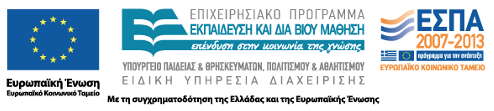

STEREO — Software research platform on software quality and engineering

Project Code: 2012SE24580099 Funding programme: ThalisFunding Agency: Co-financed by the European Union (European Social Fund – ESF) and Greek national funds through the Operational Program "Education and Lifelong Learning" of the National Strategic Reference Framework (NSRF)Project type: RTDStarting date: 2012-10-01Ending date: 2015-09-30Total budget: 560,987 euro
Project manager: Maria Kechagia Contact: Maria Kechagia Scientific coordinator: Diomidis Spinellis
Description
The project aims to provide an infrastructure that will facilitate research efforts by integrating data collection, data processing in large-scale infrastructures, and dissemination of results. In order to evaluate software quality, data from Free/Libre/Open Source Software (FLOSS) projects will be used. Such an infrastructure will consist of: 1) Software, enabling researchers to develop and run experiments efficiently on large data volumes, along with a collection of readily available data processing, curating and analysis methods 2) Pre-processed data, from FLOSS projects, in a form that is suitable for analysis 3) A cloud based computation infrastructure, suitable for mass data processing.
Partners
Publications
Journal Articles
- Maria Kechagia, Dimitris Mitropoulos, and Diomidis Spinellis. Charting the API minefield using software telemetry data. Empirical Software Engineering, 20(6):1785–1830, December 2015.
- Diomidis Spinellis and Panos Louridas. The carbon footprint of conference papers. PLoS ONE, 8(6):e66508, May 2013.
- Georgios Gousios and Diomidis Spinellis. Conducting quantitative software engineering studies with Alitheia Core. Empirical Software Engineering, pages 1–41, 2013.
Conference Publications
- Diomidis Spinellis, Panos Louridas, and Maria Kechagia. The evolution of C programming practices: a study of the Unix operating system 1973–2015. In Willem Visser and Laurie Williams, editors, ICSE '16: Proceedings of the 38th International Conference on Software Engineering. New York, May 2016. Association for Computing Machinery.
- Diomidis Spinellis, Panagiotis Louridas, and Maria Kechagia. An exploratory study on the evolution of C programming in the Unix operating system. In Qing Wang and Guenther Ruhe, editors, ESEM '15: 9th International Symposium on Empirical Software Engineering and Measurement, 54–57. IEEE, October 2015.
- Diomidis Spinellis. A repository with 44 years of Unix evolution. In MSR '15: Proceedings of the 12th Working Conference on Mining Software Repositories, 13–16. IEEE, 2015. Best Data Showcase Award.
- Vassilios Karakoidas, Dimitris Mitropoulos, Panos Louridas, Georgios Gousios, and Diomidis Spinellis. Generating the blueprints of the Java ecosystem. In MSR '15: Proceedings of the 2015 International Working Conference on Mining Software Repositories, 510–513. IEEE Computer Society, 2015.
- Dimitris Mitropoulos, Vassilios Karakoidas, Panos Louridas, Georgios Gousios, and Diomidis Spinellis. The bug catalog of the Maven ecosystem. In MSR '14: Proceedings of the 2014 International Working Conference on Mining Software Repositories, 372–365. ACM, June 2014.
- Maria Kechagia and Diomidis Spinellis. Undocumented and unchecked: exceptions that spell trouble. In MSR '14: Proceedings of the 11th Working Conference on Mining Software Repositories, 312–315. ACM, June 2014.
- Maria Kechagia. Improvement of applications' stability through robust APIs. In Proceedings of the 29th ACM/IEEE International Conference on Automated Software Engineering, ASE '14, 907–910. New York, NY, USA, 2014. ACM. Doctoral Symposium.
- Marios Fragkoulis, Diomidis Spinellis, Panos Louridas, and Angelos Bilas. Relational access to unix kernel data structures. In Proceedings of the Ninth European Conference on Computer Systems, EuroSys '14, 12:1–12:14. New York, NY, USA, 2014. ACM.
- Maria Kechagia, Dimitris Mitropoulos, and Diomidis Spinellis. Improving the quality of APIs through the analysis of software crash reports. In Andrew V. Jones and Nicholas Ng, editors, 2013 Imperial College Computing Student Workshop, volume 35 of OpenAccess Series in Informatics (OASIcs), 57–64. Dagstuhl, Germany, 2013. Schloss Dagstuhl–Leibniz-Zentrum fuer Informatik.
- Diomidis Spinellis, Vassilios Karakoidas, and Panagiotis Louridas. Comparative language fuzz testing: programming languages vs. fat fingers. In PLATEAU 2012: 4th Annual International Workshop on Evaluation and Usability of Programming Languages and Tools—Systems, Programming, Languages and Applications: Software for Humanity (SPLASH 2012). ACM, October 2012.